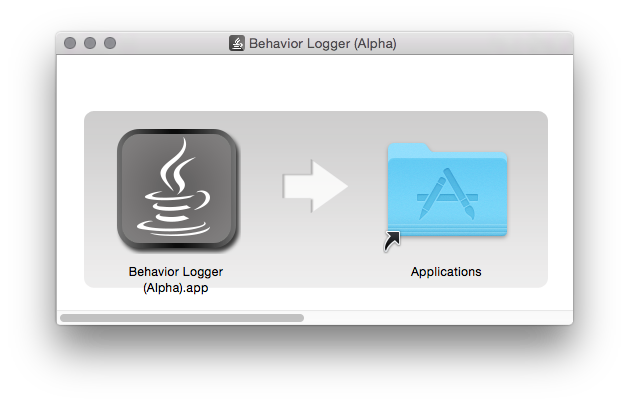
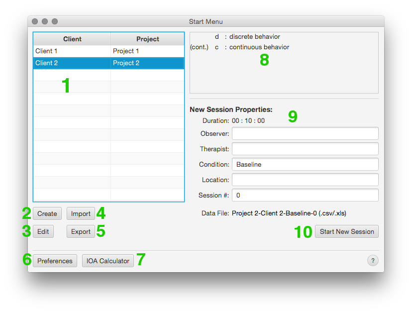
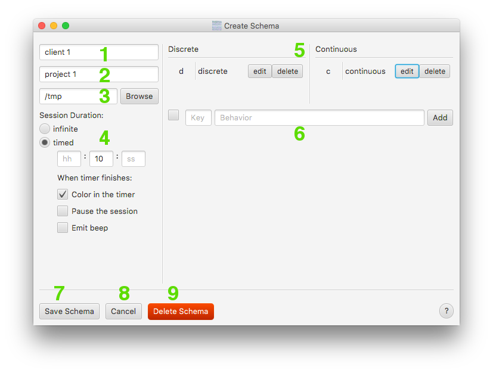
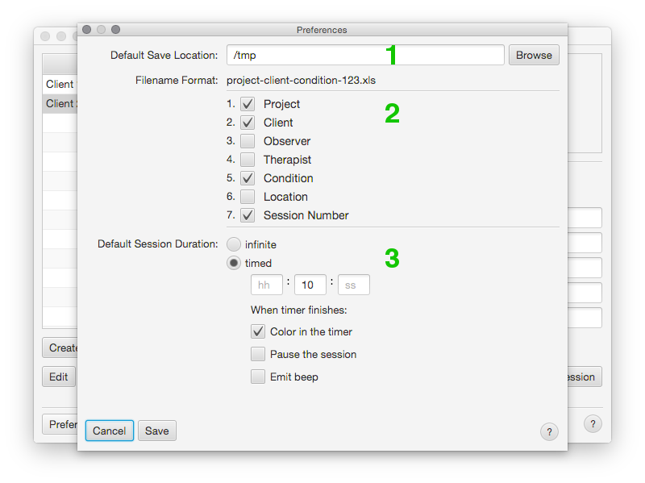
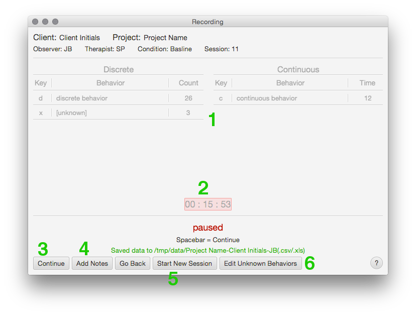
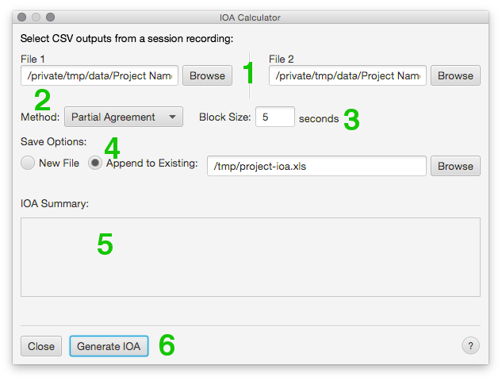

Click "install". When finished, you should be able to open the application from Start Menu > All Programs.
Click "install". When finished, you should be able to open the application from Start Menu > All Programs.The 3Bird Behavior Logger is a data collection tool for applied behavior analysis. The interface was designed for practitioners conducting treatment while one or more data-collectors record behaviors.
After downloading the installer (3Bird Behavior Logger.exe), double-click the file.
Click "install". When finished, you should be able to open the application from Start Menu > All Programs.
After downloading the installer (3Bird Behavior Logger.dmg), double-click the file.  Drag the icon over the Applications folder.




spacebar as a shortcut (see Keyboard Shortcuts). You can only record behaviors while the timer is active.While a session is playing, press any of the mapped keys to log a behavior. Discrete behaviors flash green and the counter will increment. Continuous behaviors toggle on and off.
You can also log new behaviors on the fly while recording.
Discrete - press an unmapped key.
Continuous - press an unmapped key while holding shift. Once the new continuous key is added, you don't have to hold shift to toggle it again.
When you pause the session, you can click Edit Unknown Behaviors to assign values to any unknowns you might have logged. If you logged an unknown by mistake, you can ignore it.
You can undo behaviors using ctrl+z for Windows and cmd+z for Macs (see Keyboard Shortcuts for a full list of shortcuts). There is no "redo" funcationality yet.
Undo works differently depending on what the latest behavior was. For discrete behaviors it simply removes the behavior and decrements the counter by 1. For a continuous behavior that has been started but hasn't ended, it reverts the counter back to its position before it started. For a continuous behavior that has ended, it decrements the counter by whatever the duration was.
At any time, you can attach notes to a session. Open the Notes menu by pressing the "Add Notes" button or by using the keyboard shortcut ctrl+n for Windows or cmd+n for Mac (see Keyboard Shortcuts). You can type anything into the text area and your notes will be automatically saved in the session output along with the session's data stream.
The app saves logged behaviors in the directory specified by the Schema (see Edit Schema). It outputs two files per session:
The names of these files can be configured in Preferences.
spacebar - start/stop the sessionctrl+z / cmd+z - undoshift+any unmapped key - log an unknown continuous behaviorctrl+n / cmd+n - open Notesesc - close Notes (if open)ctrl+t / cmd+t - insert current session timestamp
Each method below details how to calculate a percent agreement for each behavior logged by two observers during a session. These methods were derived from two papers (see References).
Exact agreement outputs a single percent agreement for a behavior between both observers. The data-logs from File 1 and File 2 get partitioned into intervals of a size specified by block-size. For each interval, the observers are considered in agreement if they both recorded the same number of occurrences within the interval. A behavior's percent agreement is equal to the number of agreements divided by the total number of intervals and multiplied by 100%.
Similar to exact agreement, the data-logs from File 1 and File 2 get partitioned according to block-size. A score between 0 and 1 is calcuated per interval by dividing the smaller of the two behavior counts by the larger. If both counts are zero, the score equals 1. A behavior's percent agreement is equal to the sum of all scores divided by the number of intervals, multiplied by 100%.
Time window varies from the other two in that it generates two percent agreements for each discrete behavior (one for each observer) and one percent agreement for continuous behaviors.
For discrete behaviors, each occurrence within each data-log is given a score of 0 or 1. A behavor recorded by one observer gets a 1 if the other observer recorded the same behavior within ± threshold seconds. If the behavior does not have a match within the bounds set by threshold, it gets a score of 0. The discrete behavior's percent agreement for each observer is equal to the sum of the scores, divided by the total occurrences, and multipled by 100%.
For continuous behaviors, the threshold does not matter. The data-log is partitioned into 1-second intervals. A continuous behavior's percent agreement is equal to the number of intervals where both observers recorded it, divided by the number of intervals where either of the observers recorded it, multiplied by 100%.
MacLean, W.E., Tapp, J.T., Johnson, W.L. (1985). Alternate Methods and Software for Calculating Interobserver Agreement for Continuous Observation Data. Journal of Psychopathology and Behavioral Assessment, 8.
Mudford, O.C., Taylor, S.A., & Martin, N.T. (2009). Continuous Recording and Interobserver Agreement Algorithms Reported in the Journal of Applied Behavior Analysis (1995-2005). Journal of Applied Behavior Analysis, 42, 165-169.*